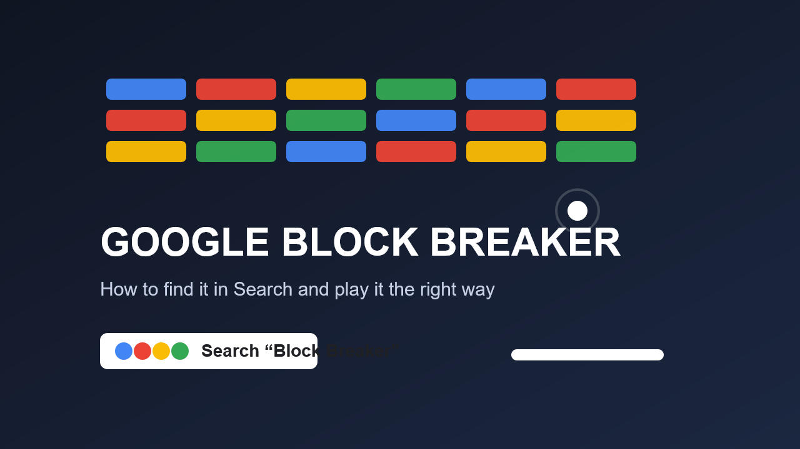

If Google is surfacing the game card for your query, you can launch it directly from search results.
Google Search game
Google Block Breaker is a Search game first, not just another random app store title.
Most of the confusion around Block Breaker starts when people mix Google’s built-in Search game with unrelated third-party mobile apps that happen to use similar names. The fastest way to find Google’s version is to start in Search, not the Play Store.

Many guides send people to unrelated games when they were actually looking for Google’s Search version.
`Block Breaker` and `Brick Breaker` can surface different result cards depending on session and device.
What makes Google’s version worth opening
The appeal is not complexity. It is speed. The game opens inside Search, needs no installation, and gives you a familiar brick-breaking loop with almost no friction. That is exactly why Google’s small built-in games travel so well online: one query, one click, and you are already playing.
The only thing that really trips people up is naming. Once low-quality guides start blending Google’s Search game with third-party apps, the instructions become messy. The clean rule is simple: if you want Google’s version, look for it in Search first.
More from our sites
Explore a few more live pages from the same publishing network.
This page sits inside a wider set of live guides, recaps, and utility pages. Use the short list below when you want a few direct jumps without loading a crowded directory page first.
- Full live site directory - Use the full network directory if you want the wider set of tools, recaps, guides, mirrors, and supporting posts.
- Magisk APK Notes - Open Magisk APK Notes for another live page from the same publishing network.
- PaintZ App Guide - Open PaintZ App Guide for another live page from the same publishing network.
- SmartTube APK Notes - Open SmartTube APK Notes for another live page from the same publishing network.
More from our sites
Explore a few more live pages from the same publishing network.
This page sits inside a wider set of live guides, recaps, and utility pages. Use the short list below when you want a few direct jumps without loading a crowded directory page first.
- Full live site directory - Use the full network directory if you want the wider set of tools, recaps, guides, mirrors, and supporting posts.
- Magisk APK Notes - Open Magisk APK Notes for another live page from the same publishing network.
- PaintZ App Guide - Open PaintZ App Guide for another live page from the same publishing network.
- SmartTube APK Notes - Open SmartTube APK Notes for another live page from the same publishing network.